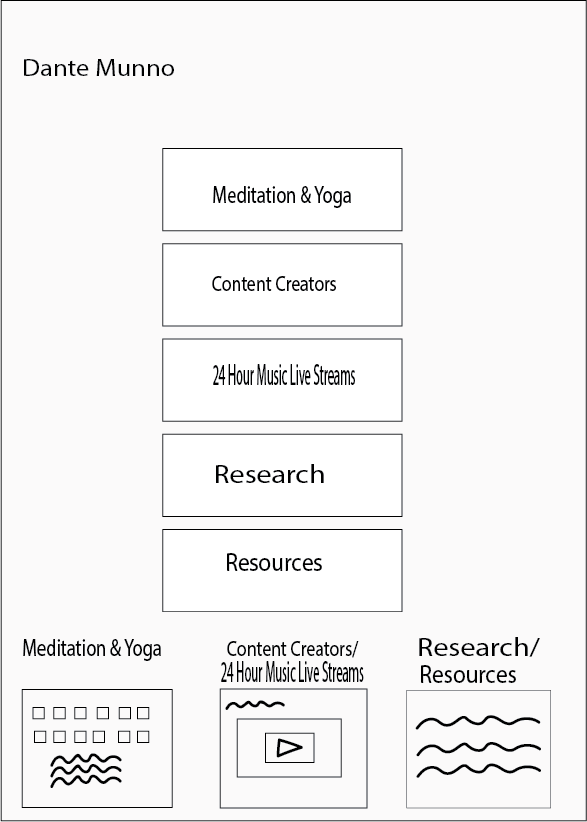

2020 has been a very intense year, it has truly been a roller coaster of emotions we all have been feeling. As we are stuck indoors due to the global pandemic known as Covid-19, this gives our mind time to race anxiously. We treat our physical health seriously, now it is time to do the same for our mental health. This website will be dedicated to finding stress relievers and resources that can help calm an anxious mind.
After long consideration I have decided to dedicate my final project to finding stress relievers for people who need it the most. As I stated previously this year has been a roller coaster of emotions with the worldwide global pandemic that is still ongoing, and everything else that is going on in the political world. This year has been hard on me mentally. I noticed that I’ve been so concerned with my physical health so much that I neglected my mental health. So after a couple of weeks of feeling down and being hard on myself, I started to explore many different roads that can lead me to better mental health. Now with the improvement I see in myself I want to share it with my peers so hopefully they can see the same benefits as I do. The intended audience I am seeking is anyone that is seeking self improvement and self enlightenment. My ultimate goal is to help my audience improve themselves and discover a new side of themselves in the process. I plan on using many different forms of media on this website. Starting off with visual evidence, I want to use yoga as a physical form of stress relieving. Yoga is all about being in the moment, keeping your mind on the here and now instead of allowing you to be a time traveler and worry about a self destructive future that is most likely never going to happen. I plan on adding photos of beginners to advanced yoga positions that the intended audience might be interested in and hopefully start their yoga journey. If yoga is a little bit too physical for my audience who do not feel like moving around. I would like to provide another alternative that places people in the here and now and that is meditation. Meditation there is a series of breathing techniques that allows you to be in the present and focus on your breathing and not anything else but your breathing. I would also like to provide videos of content creators who I feel like can help my intended audience reach a better self that they visualize. These are content creators I wholeheartedly trust to lead my audience down the right path. Content creators who also went through possibly the struggles of mental health. I will provide content creators that are now providing inspirational videos, uplifting content and tips for improving mind, body and soul to psychiatrists who live streams and sits with an audience doing live question and answer sessions with their audience. I also want to provide my audience with research and the benefits of things like meditation and yoga and breathing techniques from neuroscientists so people can get a better understanding of why and or how these things can improve you so much. One thing that I also feel is very helpful is therapy. I feel as if therapy has been dismissed by people before they really get the chance to sit with a therapist who seeks to help you better understand and improve yourself. How I plan to categorize these things goes as follows. I want to put meditation and yoga into one link that sends you to a separate page that shows photos, videos, techniques, and written research on why and how these things improve your mental health. The next link on the homepage is going to be dedicated to content creators. I want to create a page that has good introductory videos to these content creators. Videos that explain who they are, their experiences, valuable lessons, tips, creating better habits, and hopefully influence my intended audience wants to explore more of their content. The next page will be dedicated to resources in New York City such as links and locations of psychiatrists for people who are seeking or are interested in speaking with someone locally (most likely online over zoom). I also want a page that goes to the research provided by neuroscientists on mental health on the benefits of doing things like meditation and yoga. Benefits like relieving stress, relieving anxiety, building confidence clear minds (no brain fog), ect... lastly I am considering a page that is dedicated to music live streams that run 24 hours for music lovers who need nice and calming music so they can decompress or help them concentrate on working.
